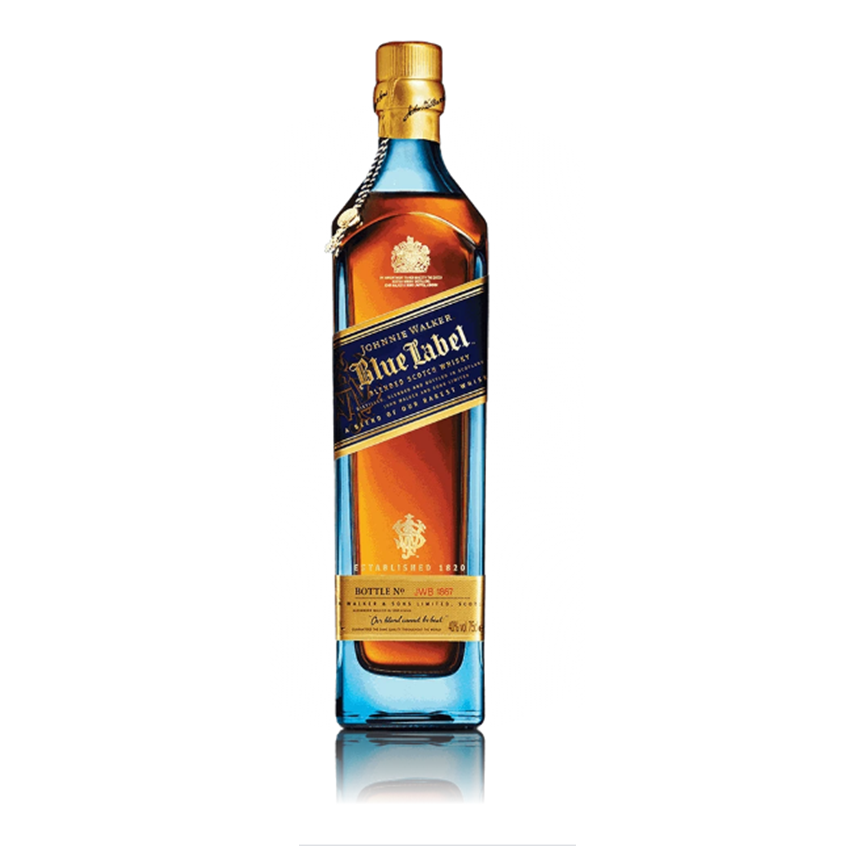

Primer parrafo y primera linea.
Segunda linea con un texto enfatizado.
Tercera linea con un texto importante
Cuarta linea con estilo
Segundo parrafo
Imagen:
Imagen 2: 
Johnnie Walker Blue Label es una obra maestra inigualable. Es una mezcla exquisita hecha con algunos de los whiskies más raros y excepcionales de Escocia. Solo uno de cada diez mil barriles tiene la calidad exclusiva y el carácter para entregar el sabor insignia e inolvidable de Johnnie Walker Blue Label.
A continuacion veremos algunos puntos a favor: